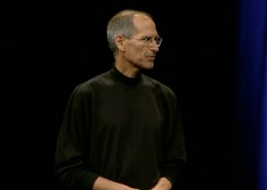

In 1975 Bill Gates and Paul G. Allen, two boyhood friends from Seattle, converted BASIC, a popular mainframe computer programming language, for use on an early personal computer (PC), the Altair. Shortly afterward, Gates and Allen founded Microsoft, deriving the name from the words microcomputer and software. During the next few years, they refined BASIC and developed other programming languages. In 1980 International Business Machines Corporation (IBM) asked Microsoft to produce the essential software, or operating system, for its first personal computer, the IBM PC. Microsoft purchased an operating system from another company, modified it, and renamed it MS-DOS (Microsoft Disk Operating System). MS-DOS was released with the IBM PC in 1981. Thereafter, most manufacturers of personal computers licensed MS-DOS as their operating system, generating vast revenues for Microsoft; by the early 1990s it had sold more than 100 million copies of the program and defeated rival operating systems such as CP/M, which it displaced in the early 1980s, and later IBM OS/2. Microsoft deepened its position in operating systems with Windows, a graphical user interface whose third version, released in 1990, gained a wide following. By 1993, Windows 3.0 and its subsequent versions were selling at a rate of one million copies per month, and nearly 90 percent of the world’s PCs ran on a Microsoft operating system. In 1995 the company released Windows 95, which for the first time fully integrated MS-DOS with Windows and effectively matched in ease of use Apple Computer’s Mac OS. Microsoft also became the leader in productivity software such as word-processing and spreadsheet programs, outdistancing longtime rivals Lotus and WordPerfect in the process.
Microsoft dramatically expanded its electronic publishing division, created in 1985 and already notable for the success of its multimedia encyclopaedia, Encarta. It also entered the information services and entertainment industries with a wide range of products and services, most notably the Microsoft Network and MSNBC (a joint venture with the National Broadcasting Company, a major American television network, which began in 1995 and ended in 2012).
Partly because of its stunning success in PC software, Microsoft was slow to realize the commercial possibilities of network systems and the Internet. In 1993 it released Windows NT, a landmark program that tied disparate PCs together and offered improved reliability and network security. Sales were initially disappointing, but by 1996 Windows NT was being hailed as the likely standard for PC networking, quickly surpassing Novell’s NetWare in market share. Microsoft did not move into Internet software until a new venture, Netscape Communications Corp., had introduced Navigator, a Web browser program that simplified the once-arcane process of navigating the World Wide Web. In a violent change of course, Microsoft quickly developed its own browser, Internet Explorer, made it free, and moved aggressively to persuade computer makers and Internet service providers to distribute it exclusively. By 1996 Microsoft was bundling Explorer with Windows OS and had begun the process of integrating Explorer directly into Windows. In response, Netscape accused Microsoft of violating its 1995 consent decree and sued; those efforts helped to persuade the Justice Department to reopen a broad investigation of Microsoft.
Microsoft chairman Bill Gates steps aside as chief executive and promotes company president Steve Ballmer to the position. Gates would stay on as “chief software architect” until June of 2008 before finally giving up day-to-day responsibilities at Microsoft. Gates is still Microsoft’s chairman of the board.